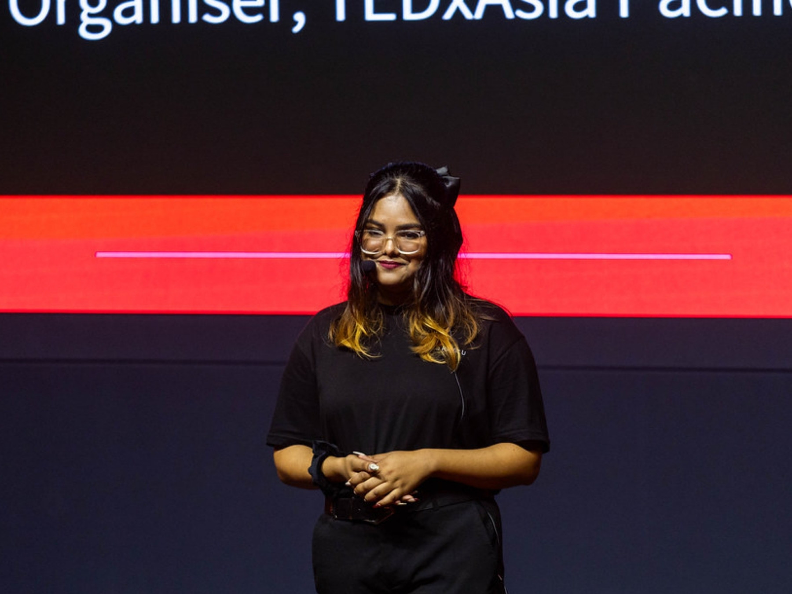

Hello, I'm
Marketer, strategist, and cybersecurity practitioner. I started freelancing during a pandemic, chose a degree because it sounded impressive, and somehow ended up building things I actually care about: brands, institutions, and experiences.
Currently based in
Kuala Lumpur, Malaysia2020. COVID. Everything shut down, and I needed to do something with my time. I started freelancing in digital marketing without really knowing what I was doing, and somewhere in the process of figuring it out, I realised I actually enjoyed it.
What hooked me was the outcome: seeing a client get real results, actual customers, measurable growth. Six years, 1,150 projects, and 550+ clients later, I've built a fairly strong conviction that most marketing fails not because of bad execution but because of bad strategy upstream.
That conviction is what eventually pushed me from doing marketing to building brands.

I chose Computer Science specialising in Cybersecurity (Digital Forensics) because, honestly, it sounded impressive. I spent most of my university not particularly loving it.
Then I started working inside an actual cybersecurity operations centre, and something clicked. The analytical rigour of it, the precision required, the way it trains you to look for what doesn't fit, I found myself genuinely interested for the first time.
What I realised is that the skills transfer. A security analyst and a brand strategist are solving the same fundamental problem, finding the signal in a lot of noise. I'd like to spend the next few years figuring out what it looks like to do both properly.
Head of Strategy & Marketing at Mahat Advisories & Centered Edge. Building the brand infrastructure for an executive leadership platform targeting ASEAN's C-suite. Season 2 launches August 2026.
Co-Founder & Director of TAEI Academy: The Advancement of Empathy and Integrity, an institution working on the gap between who people believe they are and how they actually operate. Rebuilding and relaunching for adult professionals in Malaysia.
Founded and organised a licensed TED event for the Asia Pacific University community. I almost didn't do it a second time. Then the event day happened, and I stood in a room full of genuinely curious people and understood why you keep going. August 1, 2026. Kuala Lumpur.
Malaysia Country Chair, leading national community and leadership initiatives as part of G100's global network. Building toward 100 committed volunteer members across the country.
I've been across Asia, the Middle East, and the US, and I'm nowhere near done. One of my bigger life goals is to see as much of the world as possible. There's something about being somewhere entirely new that quietly shifts how you see everything else.
Mostly romance and science fiction, which sounds contradictory but isn't. I'm drawn to things that sit in the space between uncertainty and nostalgia, stories that feel like life, a little unresolved and a little beautiful.
I don't have a specific genre. One week it's something cinematic, the next it's completely different. I've stopped trying to categorise it. It is what it is depending on the mood, the weather, the city.
I'm based in Kuala Lumpur and work across the globe. If you're thinking about a collaboration, a conversation, or just want to connect, reach out.
"The world is too deliberate, too detailed, too quietly extraordinary to feel accidental."— Rafa, somewhere between Kuala Lumpur and wherever she's headed next